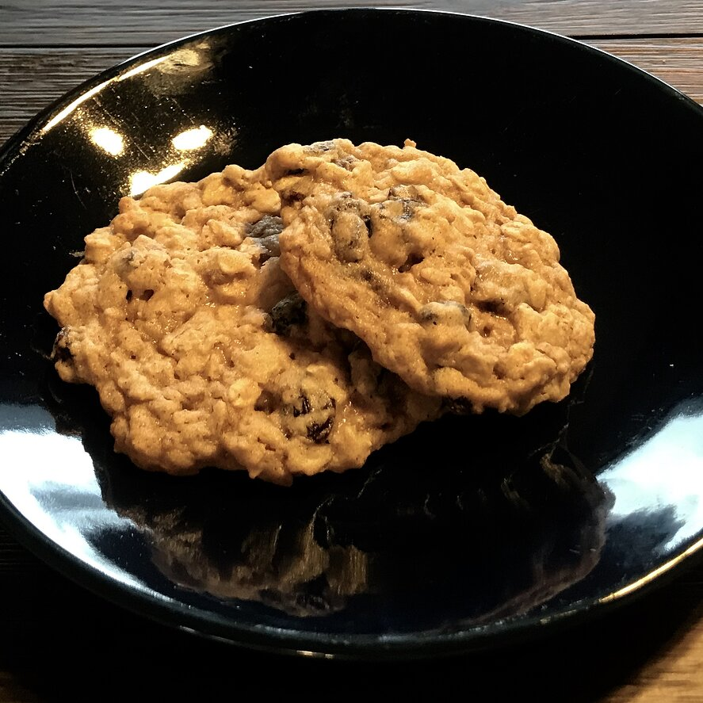

Oatmeal Raisin Cookies

Description
This is one of the three recipes that i selected for this proyect,
i want to finish this proyect, not gonna lie xD
enjoy your cookies homeboys :p
Ingredients
- ¾ cup butter, softened
- ¾ cup white sugar
- ¾ cup packed light brown sugar
- 2 eggs
- 1 teaspoon vanilla extract
- 1 ¼ cups all-purpose flour
- 1 teaspoon baking soda
- ¾ teaspoon ground cinnamon
- ½ teaspoon salte
- 2 ¾ cups rolled oats
- 1 cup raisins
Steps
- Preheat oven to 375 degrees F (190 degrees C).
- In large bowl, cream together butter, white sugar, and brown sugar
until smooth. Beat in the eggs and vanilla until fluffy. Stir together
flour, baking soda, cinnamon, and salt. Gradually beat into butter mixture.
Stir in oats and raisins.
Drop by teaspoonfuls onto ungreased cookie sheets.
- Bake 8 to 10 minutes in the preheated oven, or until golden brown.
Cool slightly,
remove from sheet to wire rack. Cool completely.
Back to list